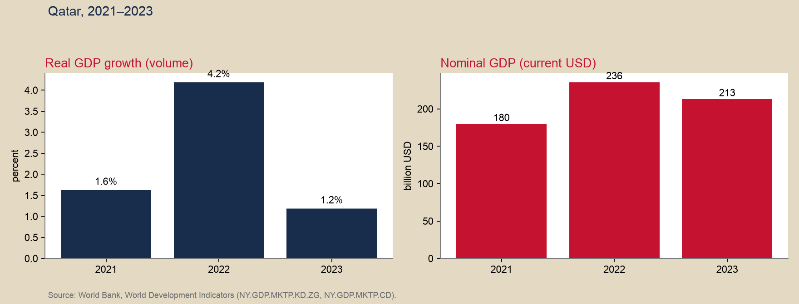
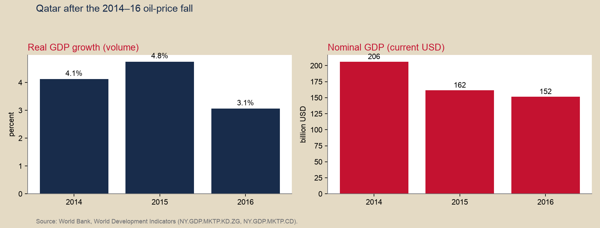
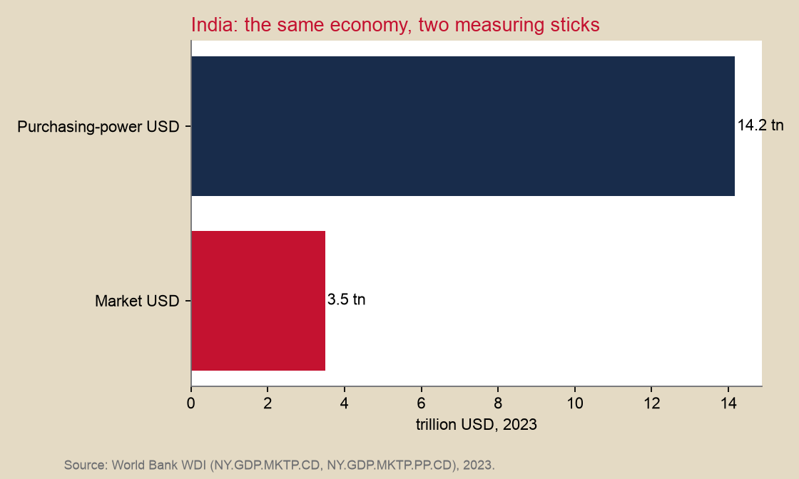
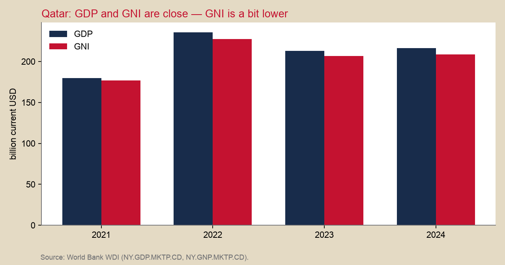

GDP Studio
Study guide · 73-103 · after Wednesday 26 August
This page is the take-home for the GDP unit. It is not homework (submit nothing here). It is not Monday’s quiz.
Walk each beat: read the idea → try the problem → then open the reveal. The four moves are the ones used on exams: concept, algebra, graph, case.
Data on this page: World Bank, World Development Indicators, unless a sentence names the International Monetary Fund Country Report 24/43. CORE readings: The Economy 2.0 Macro 3.1–3.4.
Calendar: Schedule · Measurement notes
1. Two stories about the same country
Idea. Qatar’s dollar GDP fell from 2022 to 2023 ($236 billion → $213 billion). Volume still grew (+4.2% then +1.2%). A manager who only reads the dollar number thinks 2023 was a contraction.

Your try (graph). In one sentence: which panel answers “did the economy produce more stuff?” Which panel answers “did the dollar value of that stuff rise?”
Reveal
Left panel = volume (real growth). Right panel = current dollars (nominal). 2023: more stuff, cheaper hydrocarbon prices, so the dollar total fell. World Bank:NY.GDP.MKTP.KD.ZG, NY.GDP.MKTP.CD.
2. The 2014–16 oil-price fall — predict, then look
Your try. The dollar price of oil collapsed. Did Qatar’s dollar GDP fall? Did volume fall as much? Write your guess before you open the figure.
Reveal — the chart

3. Concept — is it in GDP?
Your try. For each, answer GDP or not, and which letter if yes (C, I, G, X−M). An import can be two letters.
- 2019 Land Cruiser on Qatar Living.
- New iPhone at Vodafone (assembled abroad).
- QNB shares.
- Teacher’s salary, Ministry of Education.
- European fan’s Doha hotel, World Cup 2022.
- North Field East LNG train.
- New Qatar Airways aircraft (imported).
- A worker in Doha sends money home.
- Unsold new cars on a Doha dealer’s lot.
Reveal
- Not GDP (used).
- C and −M.
- Not I (financial).
- X (service export).
- I and −M.
- Not C in Qatar; can move GNI, not GDP.
- +I (inventories). When they sell, −I and +C (or +X).
4. Algebra — value added
Cotton shirt (CORE 3.2). Fill the last column, then the totals.
| Stage | Cost of input | Price of output | Value added |
|---|---|---|---|
| Raw cotton | 0 | 50 | ? |
| Cloth | 50 | 80 | ? |
| Shirt | 80 | 100 | ? |
| Sum of sales | ? | ||
| Sum of value added = final sale | ? |
Reveal
Value added: 50, 30, 20. Sum of sales = 230 (wrong if you call that GDP). Sum of value added = 100 = the final shirt. Do not add intermediate invoices.5. Algebra — karak and dates
Year 1: karak P=10, Q=100; dates P=20, Q=50.
Year 2: karak P=12, Q=110; dates P=22, Q=55.
Compute nominal GDP in each year, and real GDP in year 2 using year-1 prices.
Reveal
Nominal Y1 = 10×100 + 20×50 = 2,000.Nominal Y2 = 12×110 + 22×55 = 2,530.
Real Y2 (Y1 prices) = 10×110 + 20×55 = 2,200.
Nominal growth 26.5%. Real growth 10%. The gap is prices.
Classroom illustration (Qatari riyals), not a national account. Same shape as CORE 3.4.
6. Three identities (write them once)
[ Y_{} = , Y_{} = +++, Y_{} C+I+G+(X-M) ]
If we counted everything, the three are equal. Recessions are falling output — therefore falling expenditure. Source: CORE 3.2–3.3.
World Cup (IMF Country Report 24/43): hotels and visitors in 2022 Q4 are a flow (X and C). Metro, port, Lusail over a decade are I (about US$200–300 billion of infrastructure; on the order of 1% of 2022 GDP for the event itself).
7. Graph — India, two measuring sticks

Your try (graph). Why can India look four times larger at purchasing-power than at market exchange rates? What would a phone-exporter care about that a local hairdresser would not?
Reveal
Haircuts and rent are cheap relative to tradable goods. Purchasing-power GDP prices a common basket. Market dollars matter when the invoice is in dollars (imported phones, factory equipment). World Bank WDI, 2023: market GDP $3.5 trillion; PPP $14.2 trillion.8. Case (Type IV) — not Monday’s quiz
You advise a firm that earns in US dollars and is choosing one country to produce a labor-intensive good: Qatar, India, Vietnam, or Kenya.
World Bank, 2023 (current USD, trillions except per person):
| Dollar GDP | Purchasing-power GDP | Dollar GDP per person | |
|---|---|---|---|
| Qatar | 0.21 | 0.34 | 80,200 |
| India | 3.50 | 14.17 | 2,430 |
| Vietnam | 0.43 | 1.51 | — |
| Kenya | 0.11 | 0.35 | — |
Recommend one country for production cost, and say why that same country might be a poor place to sell a dollar-priced luxury good.
There is no unique answer. You must use the difference between dollar GDP and purchasing-power GDP. Do not use Argentina, Indonesia, Mexico, or Poland here — those appeared on older quizzes.
Reveal — a reasonable argument, not the only one
A low price level (purchasing-power GDP high relative to dollar GDP) means a dollar buys a lot of local labor and rent — attractive for production. The same low dollar incomes make local sales of a $1,000 device small. India and Vietnam typically show a large PPP-versus-market gap; Qatar’s price level is high (energy incomes). Kenya is closer to the “produce there, don’t sell luxury there” pattern. Grade the mechanism, not the country name.9. GDP versus GNI

GNI = GDP + net primary income from abroad. In this World Bank vintage they are close; GNI is a bit lower. Remittances and foreign-owned energy profits are why the two can part. We still teach the definition when the gap is small.
Homework 1 is on Canvas, due 9 September. Quiz 1 is Monday 31 August, in class. This Studio does not replace either.